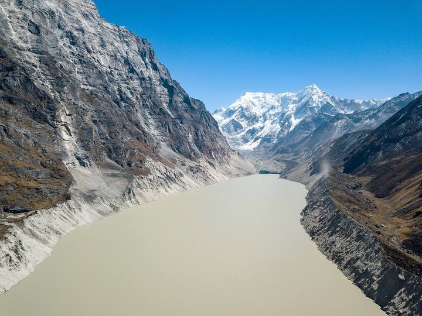
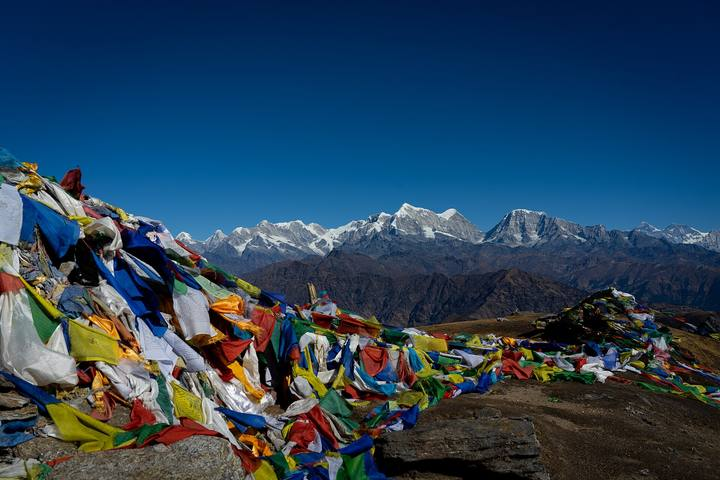

Kalinchowk
Three days from Kathmandu: by road to Charikot, on foot or by jeep to the lodge village of Kuri, then up a stone path or a cable car to the Kalinchowk Bhagwati shrine.
- Duration
- 2–4 days
- Distance
- 20 kmapproximate
- Highest point
- 3,842 mKalinchok · 12,605 ft
- Highest night
- 3,370 mKuri
- Difficulty
- ModerateTeahouse lodges
- Best months
- Mar–Apr, Oct–Nov
Is this trek right for me?
The walking
3 days in all. Most walking days are 2 to 3 hours on foot, and the longest is about 7 hours. Five to seven hour days with real climbs, usually below 4,500 m.
The height
The highest night is at 3,370 m, and the plan gains height quickly on the way. Many people feel it. The day-by-day plan marks where: take that day slowly, or split it.
Where you sleep
In lodges every night: a simple twin room, a shared bathroom and hot meals in a warm dining room.
The help you need
The rules require a licensed guide on this route. A porter to carry your bag is your choice.
Overview
Kalinchowk is a rocky hilltop in Dolakha district with a small shrine to the goddess Bhagwati, ringed with bells and iron tridents, and a skyline that runs from Ganesh Himal and Langtang in the west to Gaurishankar and the Rolwaling peaks close at hand. Its height is usually given as 3,842 m. For Nepalis it is a place of pilgrimage first and the nearest place to Kathmandu for a day in the snow second, so in winter the lodge village of Kuri, below the top, fills with families and groups of friends.
As a walk it is short. From Charikot, the district town, a footpath and a rough road climb past the hamlet of Deurali and up through rhododendron forest to Kuri: five to seven hours and about 1,400 m of ascent. Jeeps cover the same ground in an hour or two, and many visitors ride. From Kuri the shrine is an hour to an hour and a half up a stone path that ends in steep steps, or five minutes in the cable car.
What needs respect is the height, not the distance. Kuri lies at about 3,370 m, and most people sleep there one day after leaving Kathmandu at 1,400 m. That is far faster than the usual advice for gaining altitude, and headaches and bad nights are common. The plan below breaks the journey in Charikot and takes you back down on the day you visit the top. It is also cold: snow can lie from December to March, and at times it shuts the last stretch of road.
Highlights
- The hilltop shrine of Kalinchowk Bhagwati, one of Dolakha's main pilgrimage sites
- A skyline from Ganesh Himal and Langtang to Gaurishankar
- Rhododendron forest between Deurali and Kuri, in flower in March and April
- Snow at Kuri in midwinter, a day's journey from Kathmandu
- A cable car that puts the top within reach of people who cannot manage the climb
Moderate: Short, with lodges and a road all the way, but the walk from Charikot climbs about 1,400 m in a day and you sleep above 3,300 m with no time to adjust.
Altitude profile
Height at the end of each day, with the high points in between. Dots are the places you sleep.
1 night gains height faster than the usual guideline. That is common on standard itineraries, but it is where problems start. Check how you feel before each of these climbs.
- Day 2, Kuri: A climb of 1400 m in one day, to sleep at 3370 m. Go slowly, drink plenty, and say so if you get a headache.
Try adding a night in the acclimatization checker · Check your symptoms
Day by day
About 7–10 h of walking in total. Times are for a steady pace with short breaks; add more for photos and tea.
-
Day1
Drive from Kathmandu to Charikot
East on the Araniko Highway to Khadichaur, then up the Jiri road, over the high ridge beyond Mude and down to Charikot. A night here at 1,970 m, instead of driving straight on to Kuri, gives your body a first step up. Draw cash and buy snacks in the bazaar this evening.
8 places to stay in Charikot, such as Hotel Ambrosia, Charikot, Downtown Hotel and Hotel Subhakamana. See them
Travel day- Sleep at
- 1,970 m
- Change
- +570 m
- Bus
- 5–6 h
-
Day2
Charikot to Kuri
An easy first hour along the road to Deurali, then uphill for the rest of the day through rhododendron forest, cutting across the bends of the jeep road, with a tea stop at the pasture of Gairi and little else. You gain about 1,400 m. Walk slowly, drink often and expect to feel the height by evening.
30 places to stay in Kuri, such as Hotel Sunapati, Mounain Mist Villa and Hotel Hymalayan & Lodge. See them
Watch this gainA climb of 1400 m in one day, to sleep at 3370 m. Go slowly, drink plenty, and say so if you get a headache.
- Sleep at
- 3,370 m
- Change
- +1,400 m
- Walking
- 5–7 h
-
Day3
Kalinchowk shrine, back to Kuri, drive to Kathmandu
Set out before dawn for the hour to hour and a half up the stone path and the final steps to the shrine, or take the cable car once it opens. Be back in Kuri for breakfast, then ride a jeep down to Charikot and go on to Kathmandu by bus or car: six to eight hours of road, so leave Kuri by mid-morning.
30 places to stay in Kuri, such as Hotel Sunapati, Mounain Mist Villa and Hotel Hymalayan & Lodge. See them
High point day- Walk ends at
- 3,370 m
- Change
- 0 m
- High point
- 3,842 m
- Walking
- 2–3 h
Ways to change it
Two days by jeep
Most Nepali visitors drive from Kathmandu to Kuri in a day, go up to the shrine at dawn and drive home. It leaves out all acclimatization. If you do it, keep the first evening quiet, and go down at once if you feel ill.
Four days, the gentler plan
After the shrine, walk or ride down to Charikot and sleep there, then see the Bhimsen shrine in Dolakha Bazaar before the bus back next day. This suits older walkers and anyone who slept badly at Kuri.
Jeep up, walk down
Ride to Kuri on day two and walk down to Charikot after visiting the shrine, four to five hours, almost all downhill. You keep the forest walk without the 1,400 m climb, and sleep the third night in Charikot.
Route map
The map loads when you scroll here. It needs a connection the first time; tiles you have viewed stay available offline.
The solid line follows footpaths mapped in OpenStreetMap. It is a guide to where the route goes, not a navigation track: trails are rerouted after landslides, so follow the signs and people on the ground. Marker positions come from OpenStreetMap where we could match a place, and from our own estimates elsewhere.
Download the trail for a map app A GPX file with 15 km of mapped path and every stop. It opens in free apps such as Organic Maps.
When to go
- January: good
- February: good
- March: best time
- April: best time
- May: good
- June: difficult
- July: difficult
- August: difficult
- September: good
- October: best time
- November: best time
- December: good
October and November give the clearest views, and in March and April the rhododendrons below Kuri are in flower. December to February is the snow season that draws Nepali visitors: nights are well below freezing, the path to the shrine can be iced and the road may shut after a heavy fall, yet in some winters little snow comes at all. From June to August the road is muddy and prone to landslides, and cloud covers the top.
Permits and guide rules
Guide required. Kalinchowk lies inside the Gaurishankar Conservation Area, and the Nepal Tourism Board has required foreign trekkers to hire a licensed guide since April 2023. Checks on the trail are inconsistent, and it is not clear that permits or guides are looked at in Kuri at all. A guide earns the fee on the walk from Charikot, where the footpath keeps leaving and rejoining the jeep road without signs, and as the person who will notice altitude sickness and get you down.
Gaurishankar CA
Conservation areaGaurishankar Conservation Area Permit · National Trust for Nature Conservation
| Foreign nationals | NPR 3,000 | person, single entry |
| SAARC nationals | NPR 1,000 | person, single entry |
Where: Online at NTNC's e-permit site or at the Tourist Service Centre in Bhrikutimandap, Kathmandu. A permit issued at a trail checkpost costs double.
The fee includes tax and children under 10 do not need a permit. NTNC lists Rolwaling and Tsho Rolpa, Kalinchowk and the Shivalaya walk-in towards Everest under this permit. Upper Rolwaling needs the Dolakha restricted-area permit too.
Fees and rules change, sometimes mid-season. Treat these as a planning guide and confirm with the Nepal Tourism Board, the Department of Immigration or a registered agency before you travel. Last reviewed 2026-11. All permits and fees
Getting there
Charikot is about 130 km from Kathmandu by the Araniko Highway and the Jiri road, five to six hours by bus. From Charikot a steep, unsealed road of about 17 km climbs to Kuri; shared and hired jeeps take one to two hours. Snow can close the upper part for days in winter, and landslides do the same in the monsoon, so ask in Charikot before you set out.
-
Bus: Kathmandu to Charikot · 5–6 h
Regular buses from the old bus park at Ratna Park; buses for Jiri also stop here. A hired car or jeep is a little quicker.
-
Jeep: Charikot to Kuri · 1–2 h
Shared jeeps leave the bazaar when full, and a whole vehicle can be hired. In snow they may stop short of the village.
-
Jeep: Kathmandu to Kuri · 7–8 h
A hired jeep can go straight through in a day. It saves a night but lifts you from 1,400 m to about 3,370 m in one go, which is how most altitude trouble here begins.
-
Jeep: Kuri to Charikot · 1–2 h
The way down. Ask your lodge the evening before to hold seats for the morning.
Hazards on this route
Fast height gain
Kuri is at about 3,370 m and the shrine near 3,800 m, reached a day or two after leaving Kathmandu at 1,400 m. Headache, nausea and poor sleep are common, and worse for anyone who drove straight up. Do not climb to the shrine with symptoms. If they are bad or getting worse at Kuri, take a jeep down to Charikot at once, whatever the hour.
Cold, snow and ice
From December to March nights at Kuri are well below freezing and lodge rooms are unheated. The stone path ices over, and the last steps below the shrine are steep and exposed. Bring a down jacket, hat, gloves and shoes with real grip. In snow, add microspikes or use the cable car.
The road to Kuri
The 17 km from Charikot are steep, narrow and unsealed. Snow, ice and monsoon landslides close the upper part without warning, and jeeps run overloaded on busy weekends. Travel in daylight, and keep a spare day in hand if snow is forecast.
Do not depend on the cable car
The cable car stops in strong wind and has been shut at times, including after it was damaged in September 2025. On winter weekends the queue can be long. Plan as if you will walk both ways, and treat a ride as a bonus.
Practical tips
- Buy the Gaurishankar Conservation Area permit online or in Kathmandu before you leave. A permit issued at a checkpost costs double, and we could not confirm that one can be bought in Kuri.
- Go midweek if you can. Kuri's lodges fill on Fridays and Saturdays from December to February.
- Bring a sleeping bag or ask for extra quilts. The only warm place in a Kuri lodge is beside the stove in the dining room.
- Eat lightly, drink plenty of water and keep alcohol for Charikot. Drinking at this height is a common cause of a bad night.
- Cable car tickets are sold only at the Kuri station; the operator listed NPR 1,300 return for foreigners when we checked. Ask on arrival whether it is running.
- Draw cash in Charikot. Kuri has no cash machine.
Cash machines on the route: Charikot. They run out of cash and go offline, so carry what you need from Kathmandu. Work out how much.
Plan this trek
Choose your dates and see the whole trip on one page: where you sleep each night, who can help you, what it may cost and the papers you need. Then ask for a price.
More tools for this trek
Who can help you on this trek
The rules require a licensed guide on this route. A porter to carry your bag is your choice.
-
A trekking company that arranges everythingOne price for everything on the trek. Ask two or three companies.
-
A guide, and a porter to carry your bagAbout USD 25 to 40 a day for the guide and USD 18 to 25 for the porter.
-
A guideAbout USD 25 to 40 a day.
-
A porter to carry your bagThe rules require a licensed guide on this route.
-
On your ownThe rules require a licensed guide on this route.
Do you work on the Kalinchowk route as a guide, porter or company? Join TrekkSewa.
Quick answers
How long does the Kalinchowk trek take?
Most people take 2–4 days. The itinerary on this page is 3 days.
How high does the Kalinchowk trek go?
The highest point is Kalinchok at 3,842 m (12,605 ft). The highest place you sleep is Kuri at 3,370 m.
How difficult is it?
We grade it moderate. Short, with lodges and a road all the way, but the walk from Charikot climbs about 1,400 m in a day and you sleep above 3,300 m with no time to adjust.
Which permits do I need?
Gaurishankar CA. Fees and where to get each one are listed in the permits section above.
Do I need a guide?
Kalinchowk lies inside the Gaurishankar Conservation Area, and the Nepal Tourism Board has required foreign trekkers to hire a licensed guide since April 2023. Checks on the trail are inconsistent, and it is not clear that permits or guides are looked at in Kuri at all. A guide earns the fee on the walk from Charikot, where the footpath keeps leaving and rejoining the jeep road without signs, and as the person who will notice altitude sickness and get you down.
When is the best time to go?
Mar–Apr, Oct–Nov are best. October and November give the clearest views, and in March and April the rhododendrons below Kuri are in flower. December to February is the snow season that draws Nepali visitors: nights are well below freezing, the path to the shrine can be iced and the road may shut after a heavy fall, yet in some winters little snow comes at all. From June to August the road is muddy and prone to landslides, and cloud covers the top.
Stage plans on this route vary between operators; treat distances and times as approximate. Reviewed 2026-11. Trails, lodges and rules change; confirm locally before you rely on any detail. Report a correction.
Similar treks
More in Rolwaling
RolwalingTsho Rolpa & Rolwaling Valley
A steep Sherpa valley under Gaurishankar, ending at a glacial lake at 4,580 m

EverestPikey Peak
A week in lower Solu, climbing to a 4,065 m sunrise over the Everest range
Nagarkot to Namobuddha
Hotel to hotel along the east rim, ending at a Buddhist pilgrimage hill